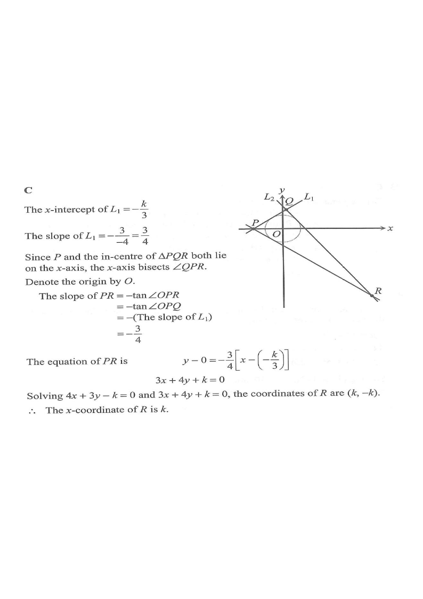

The equations of the straight lines \(L_1\) and \(L_2\) are
\(3x-4y+k=0\) and \(4x+3y-k=0\)
respectively, where \(k\) is a positive constant. It is given that \(L_1\) cuts the \(x\)-axis at the point \(P\). Denote the point of intersection of \(L_1\) and \(L_2\) by \(Q\). If \(R\) is a point lying on \(L_2\) such that the in-centre of \(\Delta PQR\) lies on the \(x\)-axis, then the \(x\)-coordinate of \(R\) is

Put \(y=0\) in \(L_1\): \(3x+k=0\) so the \(x\)-intercept of \(L_1\) is
\(x=-\dfrac{k}{3}\quad\Rightarrow\quad P\left(-\dfrac{k}{3},\,0\right)\)
Writing \(L_1:3x-4y+k=0 \Rightarrow y=\dfrac34x+\dfrac{k}{4}\),
\(\text{slope of }L_1=\dfrac34,\qquad \text{slope of }L_2=-\dfrac43\)
Since \(\dfrac34\times\left(-\dfrac43\right)=-1\), \(L_1\perp L_2\), so \(\angle PQR=90^\circ\).
Solve \(\;3x-4y+k=0\;\) and \(\;4x+3y-k=0\;\) simultaneously:
\(3(1)-4(2):\ -25y+7k=0\ \Rightarrow\ y=\dfrac{7k}{25}\)
\(4(1)+3(2):\ 25x+k=0\ \Rightarrow\ x=-\dfrac{k}{25}\)
\[Q\left(-\dfrac{k}{25},\ \dfrac{7k}{25}\right)\]
The in-centre of \(\Delta PQR\) lies on the \(x\)-axis and \(P\) also lies on the \(x\)-axis, so the \(x\)-axis must bisect \(\angle QPR\).
Let \(\theta\) be the inclination angle of \(PR\). Reflection in the \(x\)-axis means the slope of \(PR\) is the negative of the slope of \(PQ\), where \(PQ\) is the segment of \(L_1\):
\(\text{slope of }PR=-\tan\angle QPO=-\dfrac34\)
\(y-0=-\dfrac34\left(x+\dfrac{k}{3}\right)\)
\(\Rightarrow\ 3x+4y+k=0\)
Solve \(\;3x+4y+k=0\;\) and \(\;4x+3y-k=0\;\):
Subtracting: \((3x+4y+k)-(4x+3y-k)=0\ \Rightarrow\ -x+y+2k=0\)
\(y=x-2k\)
Substitute into \(3x+4y+k=0\):
\(3x+4(x-2k)+k=0\ \Rightarrow\ 7x-7k=0\ \Rightarrow\ x=k,\quad y=-k\)
\[R(k,\,-k)\]
The \(x\)-coordinate of \(R\) is therefore \(\boxed{k}\).
Question. The equations of the straight lines \(L_{1}\) and \(L_{2}\) are \(5x-12y+k=0\) and \(12x+5y-k=0\) respectively, where \(k\) is a positive constant. \(L_{1}\) cuts the \(x\)-axis at \(P\) and \(Q\) is the point of intersection of \(L_{1}\) and \(L_{2}\). If \(R\) is a point on \(L_{2}\) such that the in-centre of \(\triangle PQR\) lies on the \(x\)-axis, find the \(x\)-coordinate of \(R\).